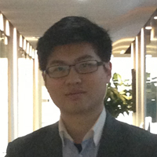

顾问团队
|
|
Mr. Bradshaw 升学总监毕业于哈佛大学法学院，作为哈佛面试官长达十五年，指导学生升学超过二十年。Mr. Bradshaw对高校招生体系、招生官审核标准及招生心理了如指掌，成功地将学生送入哈佛、耶鲁、普林斯顿、斯坦福等顶尖名校。他坚持不仅为学生寻找最好的大学，作为一名导师更要为学生规划成功的人生，他很多学生如今已经成为美国的中流砥柱， 各个行业的精英。 |
|

|
Ying Chen 陈鹰 职业规划顾问高中毕业于英国私立高中Glenalmond College，后赴美就读纽约大学，主修数学、经济、哲学。陈鹰在华尔街投资银行洒下过无数汗水，并曾任关爱中国基金会纽约大学分部主席，为中美慈善和教育贡献过绵薄之力。留学10年旅居数国的他，对各国教育、文化有着独特见解，擅长为学生发掘潜能，制定最合适的职业学业发展规划。 |

|
Jun Chen（陈骏） 文书专家Jun成长于美国印第安纳州，本科毕业于达特茅斯大学，同时被耶鲁大学以及斯坦福大学录取。他有着多年指导学生写作的经验，擅长帮助学生更好地使用文字，强化细节，有趣并且清晰地展示出学生的独特自我。Jun热爱教育工作，每一位他的学生也都是他的挚友，一起在人生漫漫长路上成长。 |
|
|
Ray Yang 杨克思 留学规划顾问国内高中原就读于华师大二附中理科班，赴美后毕业于美国著名私立高中Peddie School，本科毕业于休斯顿的莱斯大学。接受过中、西方高水平教育的熏陶，对于中、美教育差别以及优劣势有着深刻理解。他对教育的热忱让他在四年多的历练中开创了新的留学申请指导理念，帮助百名学生获得了去往自己梦想学校的机会，并仍然致力于为更多向往美国的中国学生提供更前沿、更专业的留学策略。 |
Joy Yang 教育总监、文书总监
本科毕业于普林斯顿大学政治科学专业，后毕业于哥伦比亚大学法学院。“优秀的学生会更在意自己得到什么样的教育，而不仅是进入什么学校”，Joy热爱教育而反对一切不利于学生成长的扭曲教育方式。她坚信优质的教育是社会发展的基石，将她对教育和人生规划的经验分享给中国更多的有志青年，并带着信念改变中国的未来。
Michael Wu 技术总监
毕业于美国著名高中霍奇科斯学校（The Hotchkiss School),后毕业于美国顶尖大学加州理工大学。Michael不仅对于各类基础科学也有十足的热情，更致力于将尖端科技引入生活改变生活。
Jingshu Zhang 张景舒 留学顾问
本科毕业于康奈尔大学，并同时被哥大、西北大学、莱斯大学、卡耐基梅隆大学等多所美国名校录取。因文学造诣，受到康奈尔大学老校长Hunter Rawlings先生亲自接见。出色的文学功底能够帮助学生更好的润饰文章，更精准的展示自身特点。
Dong Guan 关东 留学顾问
毕业于密歇根大学安娜堡分校与上海交通大学创办的机械工程和电子信息工程双学位项目。其丰富的名校申请经验能够为证明自己实力的你提供最专业的名牌大学申请帮助。并且，身为麻省理工中国学生学者联合会职业发展部门部长, 熟知各个行业对人才的需求。
Jiayi Deng 邓嘉宜 留学顾问
毕业于宾夕法尼亚大学沃顿商学院（The Wharton School of the University of Pennsylvania），金融、会计和数学三专业齐修，曾于谷歌、摩根大通银行实习，毕业后被华尔街多家投行录取。做为商科申请主负责人，其手下所出申请战绩可谓硕果磊磊。
Shaun Rong 戎子钦 海外专家
本科毕业于清华大学材料工程专业，曾领导创立了加州伯克利大学商业教育课程“科技创业”。熟知申请的各个流程和环节，热心的他指导过众多校友进行选校咨询和文书修改，有丰富的留学咨询经验。
Guanghao Shuai 帅广浩 海外专家
本科毕业于密歇根大学机械工程系，并以优异成绩被保送密歇根大学研究生学院－Rackham School，进修本硕连读项目，在5年时间内获得美国顶级名牌大学本科和硕士学位。研究生阶段担任教授助理，获得全额奖学金，参与新能源与清洁能源课程的教学。
Yijing Song 宋怡婧 海外专家
毕业于范德堡大学，主修数学专业，辅修经济学以及计算机科学。并获范德堡大学优异数学奖学金，为该校15年内唯一获得者。早在本科期间便于华尔街实习，拥有丰富的工作和申请经验。